A témakör célja, hogy a tanuló képessé váljon egyszerűbb weboldalak létrehozására és szerkesztésére online és helyi telepítésű fejlesztőeszközökkel.
Számos videó található az interneten ebben a témában. A következőt javaslom megtekintésre. Vegyük figyelembe, hogy időről-időre megváltoztatják a szerkesztő felépítését, kivesznek valamit belőle, valamit beletesznek. Javasolt időnként frissíteni a szoftvert!
Számos videó található az interneten ebben a témában is. Attól függően, hogy mire szeretnénk használni a szerkesztőt, például webfejlesztés, python programozás esetleg C# programozás, más-más beállítások ajánlatosak. De néhány alap funkció minden esetben ugyanaz. Nézzük melyek ezek!
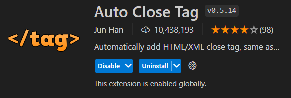
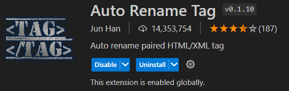
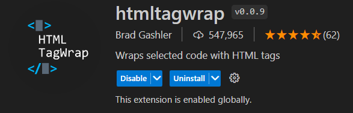
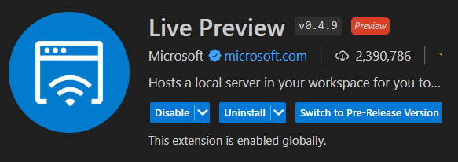
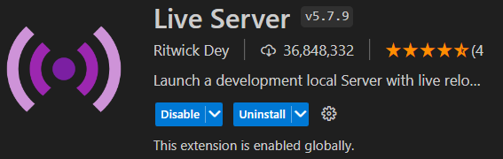
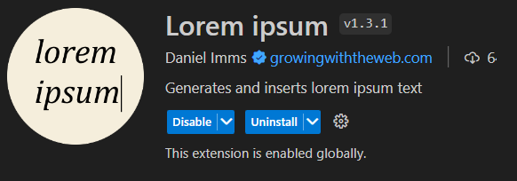
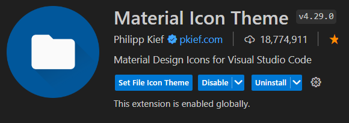
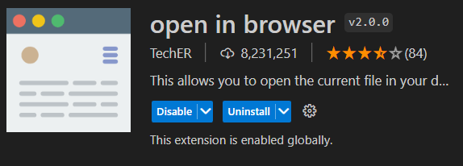
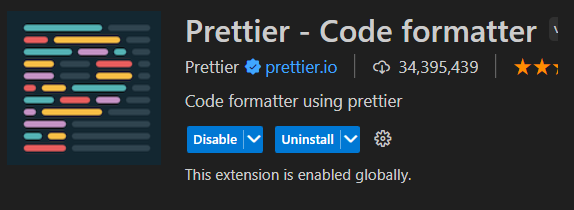
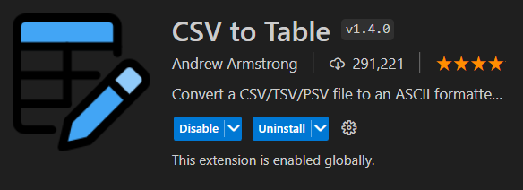
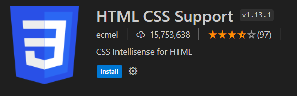
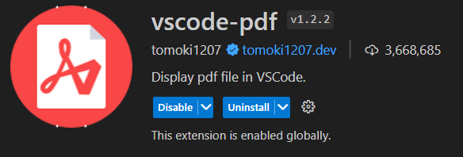
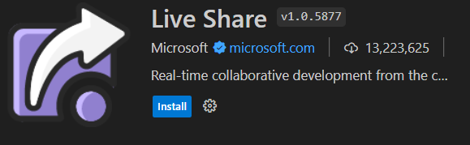
Csoportmunka folyamán nagyon hasznos lehet a következő kiterjesztés (extension). Lehetővé teszi a kódban való egyidejű és kölcsönösen nyomonkövethető változtatást több szerkesztő által. Íme egy videó arról hogyan működik.
keresőmotor optimalizálás: A keresőoptimalizálás jelentése, olyan tevékenységek összessége, melyeknek célja az hogy honlapunk minél jobb helyezést kapjon a keresőoldalakon a találati listában . Ennek a célja pedig az, hogy minél több látogató érkezzen a weboldalunkra.
A keresőoptimalizálás egy több stratégiát, technikát és taktikát magába foglaló tevékenység, célja pedig hogy hogy egy webhely a keresőmotorok találati oldalain (SERP - Search Engine Result Page) minél magasabb helyezést érjen el hogy , és így nagyobb látogatóforgalomra tehessen szert.
A HTML a HyperText Markup Language (Hiperszöveg Jelölőnyelv) rövidítése.
A HTML állományokat .html kiterjesztéssel mentjük el!
Hogyan épül fel egy elem:
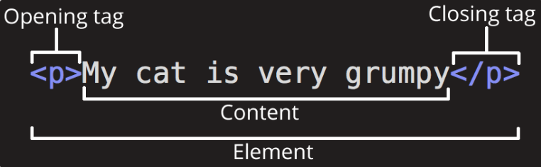
Van néhány elem, melynek csak nyitó címkéje (opening tag) van. Ezeket üres elemeknek (void, empty element) hívjuk. Az üres elemnek nincs tartalma (content). A HTML-ben nem kötelező lezárni ezeket az elemeket a nyitó címkében, de vannak olyan nyelvek (pl. XML, XHTML) ahol kötelező. Ezért zárjuk le őket ha tehetjük, bajt nem okozunk vele. (A Visual Studio Code - Prettier kiterjesztése úgyis lezárja!)
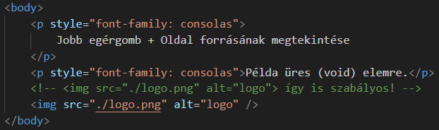
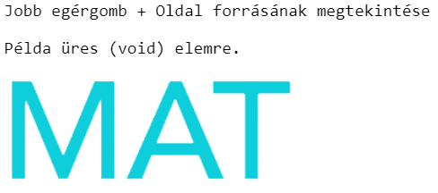
Az elemek egymásba ágyazhatóak. Ekkor vigyázni kell arra, hogy szabályosan ágyazódjanak be. Tehát egy belső elem mindkét címkéje a külső elem címkéi között szerepeljen.
A címkék nem kis- és nagybetű érzékenyek: <P>=<p>. Azonban javasolt a kisbetű használata a szigorúbb nyelvek miatt (pl. XHTML).
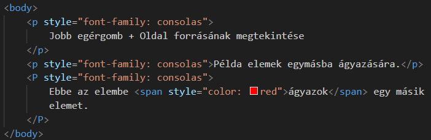
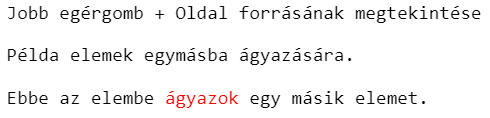
Az attribútumok módosítják és kiegészítő információkkal látják el a HTML elemeket. Bármely HTML elemnek lehetnek attribútumai! Mindig az elem nyitó címkéjében található! A következő alakban szerepel - név="érték":
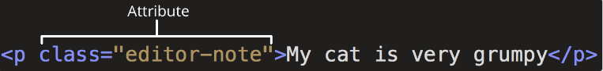
Legismertebb, legtöbbször használt attribútumok:
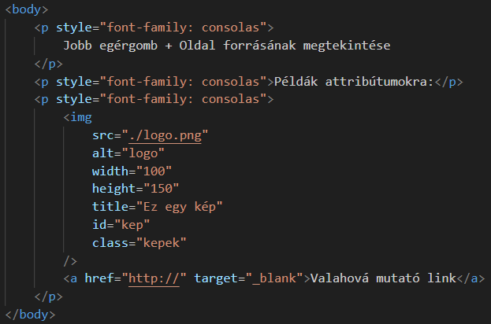
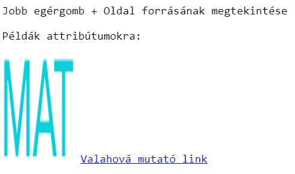
Figyeljük meg a lang="hu" attribútumot a html elem nyitó címkéjében (lásd következő feladat). Ennek a szerepe a SEO-nál van.
Fontosak még a charset és name attribútumok is. Az előbbi felel az oldal karakterkódolásáért, az utóbbi segítségével tudjuk megadni a meta elemeket (lásd következő feladat).
Az attribútumok nevei nem kis- és nagybetű érzékenyek: <p title="">=<p TITLE="">. Azonban javasolt a kisbetű használata a szigorúbb nyelvek miatt (pl. XHTML).
Kötelező az attribútumok értékét idézőjelek vagy aposztrófok közé rakni. Ha nem tesszük meg, akkor a több szóból álló érték szétesik úgynevezett boolean attribute-mokra. Mivel ebből csak néhány értelmezett a HTML-ben, ezért az ezeken kívüli értékeket a böngésző nem fogja feldolgozni.
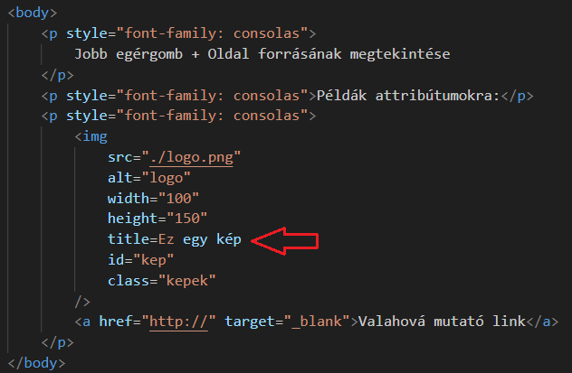
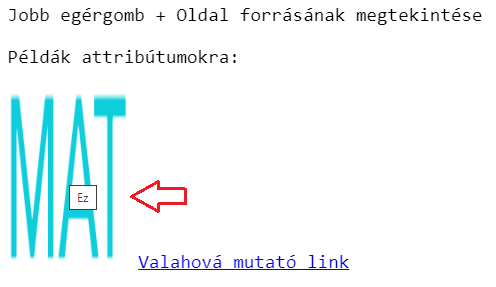
A kommentek tartalmát nem jeleníti meg a böngésző. Kettős szerepet játszanak:
clear_all Megjegyzéseket, emlékeztetőket helyezhetünk el bennük, hogy mások (vagy mi később) tisztában legyenek a kód feladatával.
clear_all Hibakeresés során tesztelésre kikapcsolhatunk sorokat a kódból, és megnézhetjük, hogyan működik nélkülük.
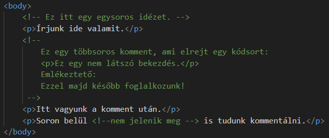
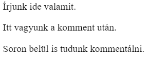
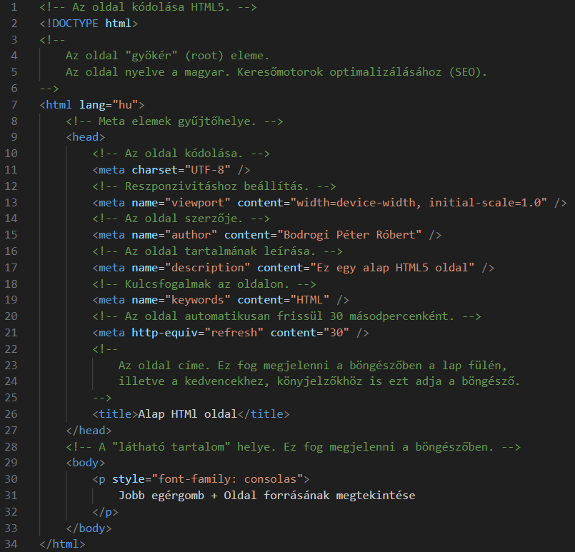
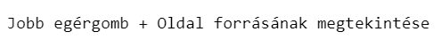
Egy alap HTML oldal felépítését láthatjuk a fenti képen. Egy kicsit több elem szerepel rajta, mint alapvetően szükséges lenne (html, head, body, title), de a meta elemek közül is kell néhány az oldal helyes müködéséhez.
clear_all Mindig új sort kezdenek!
clear_all Elfoglalják az egész rendelkezésre álló szélességet.
clear_all A böngésző tesz egy kis margót elé és utána.
Íme néhány többet használt blokkszintű elem:
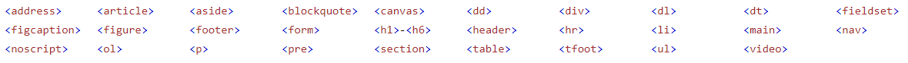
A legtöbbet használt blokkszintű elem a <div> elem, melyet univerzális tartóelemként, konténerként (container) képzelhetünk el más elemek egybefogásához.
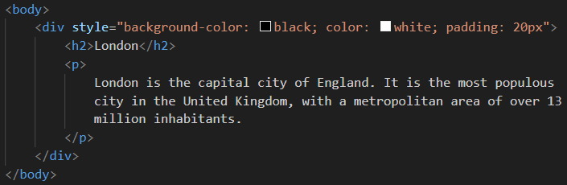
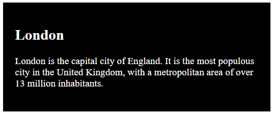
clear_all Oda kerülnek beszúrásra a weboldalon, ahol a HTML kódban szerepelnek. Általában egy másik elemen belül vannak!
clear_all Annyi helyet foglalnak, amennyi feltétlenül szükséges.
clear_all Nem állíthatunk be szélességet "width", illetve magasságot "height" az elemre!
clear_all Nem állíthatunk be alsó- és felső margót "margin", illetve kitöltést "padding" az elemre!
clear_all Nem tartalmazhatnak blokkszintű elemeket!
Íme néhány többet használt beágyazott elem:
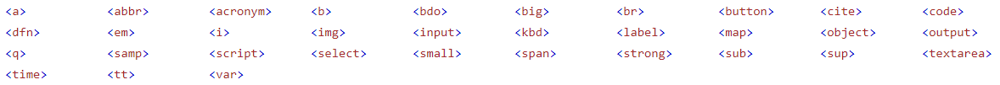
A legtöbbet használt beágyazott elem a <span> elem, melyet univerzális tartóelemként, konténerként (container) képzelhetünk el más elemeken belüli részek kijelöléséhez.
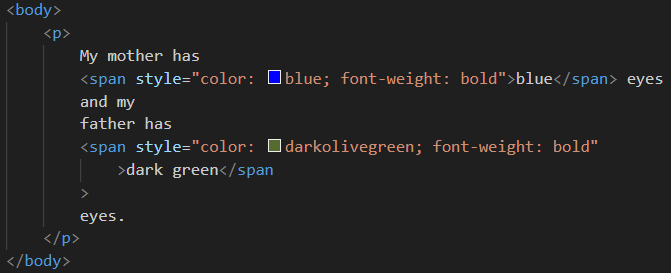
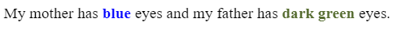
Blokkszintű elem!
Blokkszintű elem!
Blokkszintű, üres elem!
Beágyazott, üres elem!
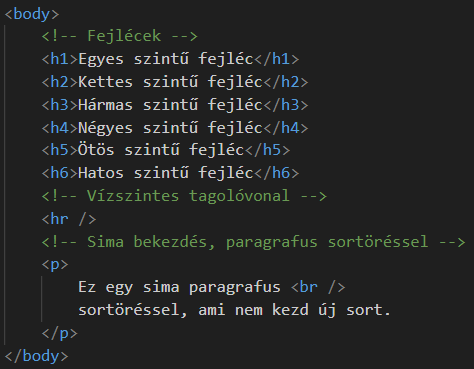
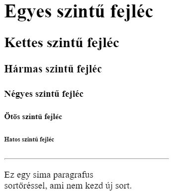
Blokkszintű elem!
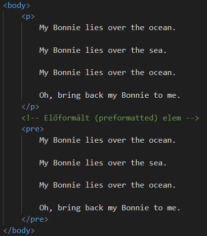
Formatáló elemeket (formatting element) akkor használunk, ha alá kell húzni valamit a szövegben, esetleg áthúzni, szóval ha a szöveget valamilyen formában alakítani kell.
Mindegyik beágyazott elem!
Blokkszintű elem!
Beágyazott elem!
Beágyazott elem!
Blokkszintű elem!
Beágyazott elem!
Beágyazott elem!
Definíció szerint ez írja le az adott állomány helyét a weblapot alkotó mappastruktúrában.
Ehhez azt kell tudni, hogy minden weblap (website) weboldalakból (webpage) épül fel, amelyek általában HTML állományok. (Lehetnek még más típusú állományok is: php, asp, ejs, jsx stb.) Ezeket a file-okat mappákba csoportosítjuk. Ennek a struktúrának van egy "belépési pontja", amelyet domain-nek is hívhatunk. Ez az adott könyvtárrendszer gyökéreleme (root) is lehet. Például:
clear_all https://google.com === https://google.com/
clear_all http://localhost:3500 === http://localhost:3500/
clear_all http://127.0.0.1:3500 === http://127.0.0.1:3500/
clear_all Az adott partíciónk gyökere: C:/, D:/ vagy F:/
Ettől a ponttól kezdve az egymásba ágyazott mappákat /-jel tagoljuk, hogy eljussunk egy adott állományhoz. A végcél mindig egy file és nem egy mappa, ha látszólag nincs is kiterjesztés (.html) a végén! Például:
clear_all https://google.com/weblapunk/html/index === https://google.com/weblapunk/html/index.html
clear_all http://localhost:3500/weblapunk/html/index === http://localhost:3500/weblapunk/html/index.html
clear_all http://127.0.0.1:3500/weblapunk/html/index === http://127.0.0.1:3500/weblapunk/html/index.html
clear_all F:/weblapunk/html/index === F:/weblapunk/html/index.html
Ekkor a domain-en belül van egy weblapunk mappa, azon belül egy html mappa, és itt található az index.html állomány, amit a böngésző megjelenít.
Ezt nevezzük abszolút állományelérési útvonalnak (absolute file path)!
Ilyenkor a domain neve el is hagyható, de az elöl lévő / nem, a böngésző úgy is megtalálja!
clear_all /weblapunk/html/index === /weblapunk/html/index.html
Következő fontos kérdés: Mit tekint a böngésző domain-nek? Ez attól függ, hogyan és honnan indítod a weblapodat.
Nézzük a következő mappastruktúrát:
Indítsuk az "open in browser" kiterjesztéssel a F: gyökérmappából. Ekkor az index.html elérési útja:
file:///F:/gyakorlas/belso/megbelsobb/index.html
Ebben az esetben a domain: "file:///F:/"
Most pedig a "live server", "live preview" kiterjesztéssel:
http://127.0.0.1:5500/gyakorlas/belso/megbelsobb/index.html
Ebben az esetben a domain: "http://127.0.0.1:5000:/"
Indítsuk az "open in browser" kiterjesztéssel a gyakorlas mappából. Ekkor az index.html elérési útja:
file:///F:/gyakorlas/belso/megbelsobb/index.html
Ebben az esetben is a domain: "file:///F:/"
Most pedig a "live server", "live preview" kiterjesztéssel:
http://127.0.0.1:5500/belso/megbelsobb/index.html
Ebben az esetben is a domain: "http://127.0.0.1:5000:/"
Indítsuk az "open in browser" kiterjesztéssel a belso mappából. Ekkor az index.html elérési útja:
file:///F:/gyakorlas/belso/megbelsobb/index.html
Ebben az esetben is a domain: "file:///F:/"
Most pedig a "live server", "live preview" kiterjesztéssel:
http://127.0.0.1:5500/megbelsobb/index.html
Ebben az esetben is a domain: "http://127.0.0.1:5000:/"
Végül indítsuk az "open in browser" kiterjesztéssel a megbelsobb mappából. Ekkor az index.html elérési útja:
file:///F:/gyakorlas/belso/megbelsobb/index.html
Ebben az esetben is a domain: "file:///F:/"
Most pedig a "live server", "live preview" kiterjesztéssel:
http://127.0.0.1:5500/index.html
Ebben az esetben is a domain: "http://127.0.0.1:5000:/"
Összefoglalva az abszolút állományelérési útvonal esetén:
clear_all "open in browser" kiterjesztés esetén, mintha manuálisan indítanánk a "file explorer"-ből, a domain az egész partíció bárhonnan is indítottunk, és a neve nem változik.
clear_all "live server" kiterjesztés esetén, a domain az a mappa, ahonnan a szervert elindítottuk, bár a név itt sem változik.
clear_all Lehetőség szerint soha ne használjuk ezt a módszert, mert nem ismerhetjük a teljes "domain"-t mindig. Az interneten müködő szerverekét meg abszolúte nem.
Amit helyette használhatunk az a relatív állományelérési útvonal (relative file path). Itt mindig ahhoz az állományhoz viszonyítunk, ahonnan indítjuk a keresést.
Az előző utolsó példában, most viszonyítsunk az index.html-hez. Ha abban a mappában keresünk egy másik állományt, amelyben az index.html található, akkor csak leírjuk az állomány nevét. Ekkor mind a két módszer ugyanazt az eredményt adja.
Lehetséges kódok:
<img src='cica.jpg' />
Ehhez is szokjunk hozzá, mert később ezt fogjuk használni többet:
<img src='./cica.jpg' />
Egy mappaszinttel feljebb lépéshez a kód:
<img src='../cica.jpg' />
Egy mappaszinttel feljebb egy másik mappába lépéshez a kód:
<img src='../images/webszerkesztesi_alapok/cica.jpg' />
Látható, hogy a szerveres megoldás már nem találja a képet (kikerült a domain-ből)! Lépjünk feljebb még egy mappaszintet:
<img src='../../cica.jpg' />
És egy másik mappába:
<img src='../../images/webszerkesztesi_alapok/cica.jpg' />
A szerveres megoldás megint nem találja a képet. Ha csak simán lépegetünk felfelé, akkor visszamegy a domain területére, és ott keresi a képet. Ha már kilép egy mappába valamelyik szinten, akkor már nem tud visszamenni!
A legfelső szinten, itt már nincs images mappa:
<img src='../../../cica.jpg' />
Hogy használjuk az állományelérési útvonalakat? Olyan elemeknél, amelyeknek vagy href, vagy src attribútumuk van! Következzen néhány példa a következő pontokban.
A link-ektől, hivatkozásoktól lesz a HTML hiperszöveg. De hivatkozás nem csak szövegrészlet, hanem bármely HTML elem lehet. Legtöbbször általában kép.
Blokkszintű elem!
Szintaxisa:
<a href="cím" target="hol">Látható rész</a>
clear_all "href": a megnyitandó oldal címe (állományelérési útvonal)
clear_all "target": hol nyíljon meg
A href attribútumban megadhatunk egy e-mail címet a mailto: séma (scheme - előírt forma) után. Ekkor a böngésző megnyítja a beállított alapértelmezett levelezőprogramot az adott címmel:
<a href="mailto:cim@gmail.com">cim@gmail.com</a>
Egy hivatkozás állapotai és színei:
clear_all "unvisited - látogatatlan": kék és aláhúzott
clear_all "visited - látogatott": lila és aláhúzott
clear_all "active - aktív": piros és aláhúzott
könyvjelző - bookmark: A hivatkozásokat arra is használhatjuk, hogy egy adott dokumentum egy bizonyos részéhez ugorjunk. Ez lehet az adott állomány vagy egy teljesen másik:
Képekkel nagymértékben javítani tudjuk egy weboldal megjelenését a különböző felületeken.
Beágyazott elem!
Általános szintaktikája:
<img src="kép forrás" alt="alternatív szöveg" width="szélesség" height="magasság" />
clear_all "src": a kép forrása (állományelérési útvonal)
clear_all "alt": alternatív szöveg, ha a kép nem jelenne meg
clear_all "width": szélesség pixelben
clear_all "height": magasság pixelben
Ezek helyett inkább a style attribútum használata javasolt! Nem tudják felülírni a stíluslapok!
A kép nem kerül beszúrásra a weboldalra, csak egy területet foglal le az eleme, és ehhez csatolja (linkeli) a képet. Nem úgy, mint a Word. Ezért szükséges az alt attribútum!
Külső forrásból származó képek jogvédettek lehetnek. Ennek mindig nézzünk utána! És hirtelen megváltozhatnak és el is tűnhetnek.
Támogatott képformátumok:
Blokkszintű elem!
A szintaxisa:
clear_all "name="ferrari"" attribútum hozzáadása az "map" elemhez
clear_all "usemap="#ferrari"" attribútum hozzáadása az "img" elemhez, hogy összekapcsoljuk őket. "Fontos a # jel!"
clear_all "area" elemek hozzáadása a "map" elemhez
clear_all "shape" (rect, circle, poly), "coords", "href" attribútumok beállítása
clear_all A "download" attribútum csak akkor tölti le a képet, ha egy weblaphoz (közös "domain"-hez, egy mappastruktúrához) tartoznak! Ha a "download" attribútum működik, akkor nem nyílik meg új oldalon, nincs "target"!
Blokkszintű elem!
Szintaxisa:
clear_all "source" elem a különböző nagyságokhoz, "media" attribútum a szélesség, "srcset" attribútum a forrás megadásához.
clear_all Látható, hogy a nagyságok csökkenő sorrendet alkotnak!
clear_all Utolsó elemként kötelező egy "img" elem megadása! Ezt használja a böngésző, ha valami miatt nem tud választani a fenti források közül (például nincs olyan kép, rossz a kiterjesztés, a böngésző nem támogatja a kiterjesztést stb.).
Blokkszintű elemek!
Szintaxis:
Általában két elem: a title és a favicon. Mind a kettőt a <head> elemben kell elhelyezni, a következőek szerint:
Böngészők által támogatott favicon formátumok:
Miért kell a weblapnak cím?
A táblázatok (table) segítségével tudjuk az adatokat sorokba és oszlopokba rendezni, a könnyebb áttekinthetőség, kezelhetőség érdekében.
Nézzük a fő részeit:
Mind blokkszintű elem!
Számos egyéb beállítási lehetőségünk van táblázatok esetén:
Blokkszintű elem!
Van még két speciális, táblázatokhoz kapcsolódó elem.
Blokkszintű elem!
Beágyazott elem!
Egymással kapcsolatban lévő adatok csoportosítására használt HTML elemek a listák. A listák egymásba ágyazhatóak!
Mind blokkszintű elem!